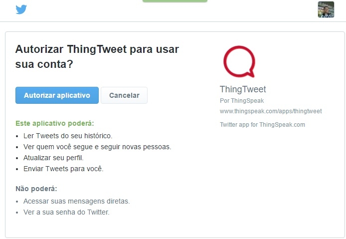

Pré-Requisitos
-
Computador com acesso a internet
-
Conta o Twitter Ativa
Criando Conta
Se você já possui uma conta, você pode avançar para a "Aplicativo" deste documento. Para começar, você precisa criar uma conta https://thingspeak.com/login , Se você já possui uma conta, você pode avançar para a "Aplicativo" no menu, e em seguida em ThingTweet
Sob o ThingTweet App, selecione "Ligar nova conta no Twitter". Isto irá redirecioná-lo para o Twitter para ver se você quiser que o aplicativo tem a capacidade de acessar a sua conta. Você pode permitir ou negar o processo. Depois de ter confirmado a conta do Twitter direita, o Twitter vai mandar de volta para ThingSpeak
-

O aplicativo gera uma chave de API ThingTweet para você usar. Se você enviar um HTTP POST com a sua chave ThingTweet API, em seguida, a mensagem será retransmitida para Twitter. Todos os parâmetros da API do Twitter (status / update) são possíveis, incluindo geolocalização.
HTTP POST to ThingTweet
Exemplo HTTP POST para atualizar o Status Twitter via ThingTweet:
POST /apps/thingtweet/1/statuses/update HTTP/1.1
Host: api.thingspeak.com
Connection: close
Content-Type: application/x-www-form-urlencoded
Content-Length: (number of characters in message)api_key=(thingtweet_api_key)&status=My thing is social!